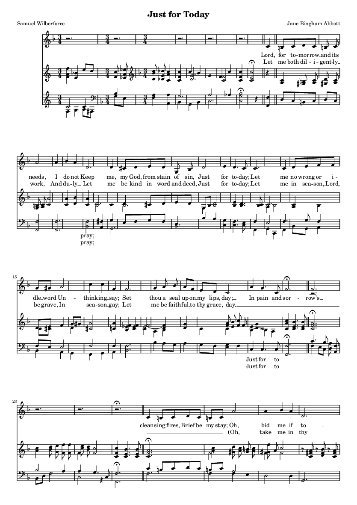

Step 1: Render pages
MusicXML scores from OpenScore corpus rendered to SVG/PNG via LilyPond in Docker. All bar numbers forced visible for later extraction.
Step 2: Extract page boundaries
Parse SVG text elements to find bar numbers. Heuristic: most common font size = bar numbers. Filter outliers via consecutive-integer clustering.
Step 3: Slice MusicXML per page
music21 extracts measures bar_start to bar_end for each page. Handles pickup bars (measure 0) with auto-offset. Retries with gatherSpanners=False for arpeggio bugs.
Step 4: Push to HuggingFace
Each row: (PNG image, per-page MusicXML, score_id, page, bars). Streaming-friendly Parquet with corpus column for predicate pushdown.

lc6583477 p1: "Just for Today" bars 1-29